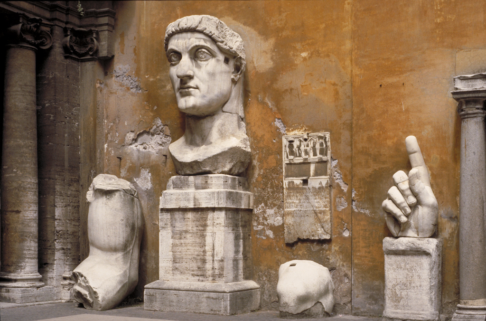
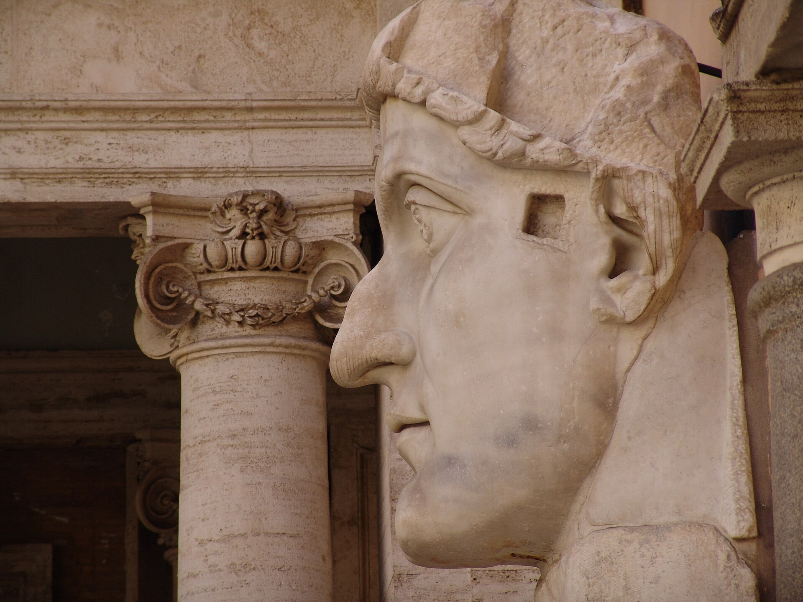

Colossal (kuh-LAH-suhl)
Far larger than life-size. A colossal statue uses enormous scale to make its subject seem important and powerful.
Artist unknown · Rome, c. 315 C.E. · Marble · Capitoline Museums


From close up, the face is smooth and calm. The eye is much larger than a real eye, and the head was designed to be viewed from far below. These choices make Constantine look distant, steady, and almost larger than life.
These marble pieces are all that remain of a giant statue of the emperor Constantine. The head is taller than a person, and the hand is nearly as large as a human body. The statue was probably seated, so people looking up at it would have felt very small beside it.
Constantine’s face still uses some older Roman ideas. He is clean-shaven, his hair is neatly arranged, and his expression is calm. But the face is not meant to be a realistic snapshot. Its smooth surfaces, broad features, and huge eyes make him seem distant and more powerful than an ordinary person.
This new style fits a changing empire. Artists were beginning to use simpler, stronger shapes to show ideas such as authority, stability, and divine support. Constantine’s portrait stands between the natural-looking portraits of earlier Rome and the more simplified art of the Late Antique period.
Far larger than life-size. A colossal statue uses enormous scale to make its subject seem important and powerful.
A portrait that chooses features and styles to show a person’s role or good qualities instead of showing every detail exactly as it appears in real life.
Changing natural-looking forms into simpler or stronger shapes to make an idea clear. Here, the oversized eyes and smooth face emphasize imperial power.
In the Early Medieval deck, you will meet the Portraits of the Four Tetrarchs, which move even farther away from natural-looking individual portraits. The four rulers have blocky bodies, simplified faces, and nearly matching features. Constantine’s huge eyes and smooth, simplified face help you see the same new goal: showing the power of an office more than the personality of one person.